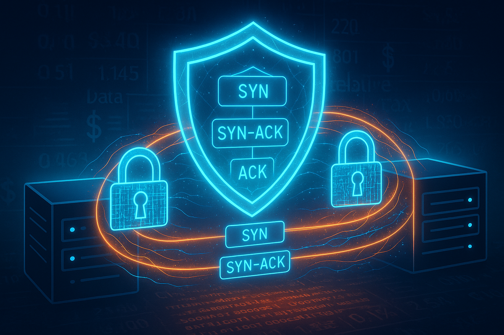

Introduction
What is BlackRock and What is Aladdin?
BlackRock is the world’s largest investment management corporation, operating in 90 locations across 30 countries. BlackRock's assets hit a record high $11.6 trillion in the fourth quarter of 2024 as the world's largest money manager posted a 21% profit jump. Assets managed by the New York-based company increased to $11.55 trillion from $10.01 trillion a year earlier and $11.48 trillion in the third quarter.
Aladdin (Asset, Liability, Debt, and Derivative Investment Network) is BlackRock’s proprietary investment platform developed in the late 1980s. It integrates portfolio management, risk analytics, trading, and operations into a single unified system.
History and Influence
Aladdin began in 1988 on a single Sun workstation (pioneered by Charles Hallac and Benett Golub). Its first major client was GE’s Kidder Peabody mortgage portfolio in 1994. Strong external demand led BlackRock to productize Aladdin for third parties, forming BlackRock Solutions in 2000. The platform’s analytics proved valuable during market crises, cementing BlackRock’s reputation for risk technology. Aladdin has evolved via heavy R&D and client-driven enhancements, and it now underpins roughly $18–22 trillion of assets. About 210 institutional clients use some form of Aladdin deployment. BlackRock aims for 30% of its revenue to come from tech-related services like Aladdin licensing, making Aladdin a strategic asset often described as “the operating system for investment managers.”
Services offered via ALADDIN Asset, Liability, Debt, and Derivative
Investment Network
BlackRock's Aladdin offers a comprehensive suite of services and tools that cover the full investment management lifecycle. These services are aimed at institutional investors, asset managers, insurers, banks, and corporations.
-
Aladdin® Investment Platform Services:
The core services for investment and risk management. -
Aladdin® Data Cloud (ADC)
A joint solution with Snowflake to modernize and unify investment data. -
Aladdin Wealth™
Tailored for financial advisors and wealth managers. -
Aladdin Climate
Integrates climate risk into investment analysis and decision-making. -
Aladdin Accounting™ (ABOR/IBOR)
Handles both Accounting Book of Record (ABOR) and Investment Book of Record (IBOR). -
Aladdin Provider
A cloud-based SaaS offering of Aladdin for smaller asset managers. -
Aladdin Studio
A developer toolkit and sandbox for building on top of Aladdin. -
Aladdin for Corporations
Tailored solutions for corporate treasuries and balance sheet management.
System Design
The System Design discussed below doesn't represent the actual design of ALADDIN, but is a hypothetical design, which is based on the understanding and interpretting the available sources (attached at the end of case study). This is a mere hypothetical representation of how different components of the ALADDIN System are connected amongst each other. As the original System Design is proprietary and confidential.

All the Data owned by the BlackRock is stored in a single secure pool, (Data Lake) called as "One BlackRock" . This Data Lake is populated by multiple sources like data from the real-time trading of the stocks, portfolio of the clients that they are handling, News articles published which give insight of the market trend.
Data from multiple sources reaches the Data Lake in different formats, like JSON, CSV, Text and others. But when it goes out of the Data Lake it is in a single same consistent format which the BlackRock Engineers refer as "Common Data Language".
The Data retried from the Data Lake is transported by a network of servers called as "BlackRock Messaging System" which is a BlackRock's way of sending data securely from the Data Lake to the destination system/service requesting it. Further on the BMS is discussed in detail below.
Data Structure and Algorithms
Graph
Aladdin, BlackRock's investment and risk management platform, is a highly distributed system that handles vast quantities of financial data, performs analytics, manages portfolios, and executes trades. To understand Aladdin’s communication architecture using a graph data structure analogy, let’s break it down:

In a graph model:
- Nodes (vertices) represent Aladdin components: data centers, microservices, databases, processing engines, client endpoints, etc.
- Edges represent communication channels or data flows between components (e.g., API calls, message queues, database queries).
Graph-Based Communication Scenarios in Aladdin
Portfolio Update Process (Directed Path)
To complete a process, the workflow is visualized as the traversal in the directed graph, One action
followed by the another to complete a particular task.
Client
Order Management Service Trade Execution Engine
Settlement Service
Reporting DB
Central risk engine needs data from many nodes:
MarketData, HistoricalData, ClientPortfolio, Scenario Simulations

Minimal representational view of how the Data is collected and stored at a single location.
As the BMS network is dense to ensure reliability, as the BlackRock Engineer claim that the network is self-healing and it will be up within 2 minutes, further on this topic has been discussed below.
Routing Data Efficiently (Shortest Path Algorithm)
Aladdin may choose the lowest latency path between geographically distributed data centers.Example: Apply Dijkstra’s algorithm to find the fastest route from a European client to a US-based data center via a content delivery node in London.
Techniques used to improve the Routing effeciency of the Data, as latency must be minimized for high frequency trades in the sector.
Load Balancing, Multipath routing
Fault Tolerance
-
Constructing a Tree: They create a tree structure that connects all nodes (switches) in a network segment. A key characteristic of a tree is that it has no loops (cycles). This prevents broadcast storms and MAC address table instability.
-
Providing Path Redundancy: While the active spanning tree has no loops, the physical network often has redundant links to provide fault tolerance. Spanning tree algorithms select specific paths to be active and block redundant paths to maintain the loop-free topology.
-
Enabling Rerouting: If a link or a node in the active path of the spanning tree fails, the spanning tree protocol can detect this failure. It will then unblock a previously blocked redundant path and reconfigure the tree to restore connectivity, effectively routing around the fault.
- To tackle the broadcast storms and ensure loop-free connectivity, port blocking technique is used. The ports are labeled a Designated port, Root Port and Blocked Port based on the criteria like Priority Number, VLAN Id and MAC Address.
Latency Optimization
As mentioned with Dijkstra's, the core idea here is to assign weights to the edges
of
the graph that represent the latency (delay) of traversing that connection.
Algorithms
like Dijkstra's then naturally prioritize paths with lower cumulative edge weights,
thus
selecting the route that data packets can travel in the shortest amount of time.
These
weights can be dynamic, changing with network congestion or other real-time
conditions.
In context of the shortest path algorithm, we can use the Bellman-Ford algorithm
which
can handle negative weights and avoid the loop, cycles. But in real-life scenarios
there
is no negative weights latency so we have to preferably use another algorithm.
As you mentioned, "weights can be dynamic, changing with network congestion or other
real-time conditions." This means the chosen pathfinding algorithm (like Dijkstra's)
would need to be re-run periodically or whenever significant changes in latency are
detected.
This often involves monitoring systems that update edge weights in the graph
representation, triggering recalculations. Routing protocols like OSPF (Open Shortest
Path First)
inherently do this by having routers exchange
link-state
information (which
can include metrics like latency) and independently recalculate shortest paths.
Dijkstra's algorithm is the workhorse for latency optimization in static graphs with
non-negative weights. When heuristics are available, A*
can offer performance benefits.
For dynamic networks, these algorithms are often embedded within larger systems that
handle the monitoring and updating of edge weights (latencies).
Security Checks
Data Lineage
Queues
Queues are critical for modeling the real-world behavior of packet buffers in network devices or
transaction pipelines. In a FIFO (First-In-First-Out) format, queues
simulate how
packets or data
items are handled under congestion. For networking, they replicate bufferbloat effects, track ACK
delays, and analyze how congestion control interacts with queuing disciplines like RED or CoDel. In
trading systems, queues are useful in managing order sequencing, stream processing, and tick data.
Their behavior under load can reveal performance bottlenecks and is central to scheduling and buffer
management, especially when latency and fairness are key concerns.

Representation image for the modified 3-way handshake protocol
Implementation of a Queue is found in the fundamental protocol of the computer network, 3-way TCP Handshake connection establishment. During the handshake, the SYN and ACK are sent from both CLient and Server in the particular order to establish a connection between them.
We can implement a Security Protocol of our own during the connection establishment handshake to strengthen the security of the network, as the data transmitted in the network is highly confidential and valuable, which if compromised not only lead to instant financial loss but also a impact on the reputation of the company, which is alot more damaging than the momentary finanacial loss.
Application of the Queue in the System
- Order Sequencing and Management: Ensuring "First-In-First-Out" (FIFO) or other priority-based handling of buy/sell orders is important for fairness and regulatory compliance. Queues manage the incoming stream of orders, especially during high-volume periods, preventing loss and ensuring they are processed in the correct sequence by the matching engine.
Heaps / Priority Queues
Heaps, especially min-heaps, serve as the backbone for priority queues in event-driven simulations. They manage time-ordered events like packet transmissions, ACK receptions, or order executions with efficient O(log n) retrieval. In both network simulation and high-frequency trading, timely processing is essential, making priority queues indispensable.
Additionally, in Quality of Service (QoS) models, priority queues ensure high-priority packets or trades are processed before others. These structures allow sophisticated scheduling mechanisms, essential in differentiated service models and delay-sensitive applications.
Real-Time Risk Alerts and Critical Event Processing
-
Aladdin's risk management capabilities generate numerous alerts based on market movements, counterparty risk, liquidity changes, and compliance checks. Not all alerts have the same severity.
-
Critical Alerts (e.g., a major market shock impacting a large portion of assets, a significant compliance breach, a sudden counterparty default warning) are flagged and pushed to portfolio managers or risk officers immediately. Less Urgent Notifications are processed without delaying these critical ones.
-
Processing High-Impact Market Data: During extreme market volatility, certain data points or events might be deemed more critical for immediate re-evaluation of positions or risk. A priority queue could help in processing these critical data updates ahead of routine ones.
-
Priority queues can be used by Aladdin's internal schedulers to manage a backlog of computational tasks, ensuring that critical calculations (e.g., intraday risk limits, urgent client valuation requests) are allocated processing resources before less critical background tasks (e.g., end-of-day report pre-computation).
-
Optimizing Resource Utilization: In a distributed computing environment (which Aladdin certainly is), priority queues can help in assigning tasks to available compute nodes based on task priority and resource availability, ensuring optimal system performance.
Hash Tables (Dictionaries)
Hash tables or dictionaries provide constant-time lookup, crucial for managing large volumes of concurrent data flows or trading sessions. Each TCP or trading flow can be mapped to a unique key (e.g., a source-destination pair or asset ID), with performance metrics or attributes stored as values. This structure allows rapid updates and efficient state management, supporting the tracking of RTTs, loss rates, window sizes, or position exposure in real time. Whether simulating network traffic or financial portfolios, dictionaries offer flexible and scalable data access patterns for live and historical analysis

Rapid Data Retrieval: Aladdin deals with millions of financial instruments (stocks, bonds, derivatives, etc.). Hash tables would be used to map unique instrument identifiers like Committee on Uniform Securities Identification Procedures (CUSIP), International Securities Identification Number (ISIN), Stock Exchange Daily Official List (Sedol), or internal Aladdin-specific IDs to their comprehensive details. This includes static data (name, sector, currency, issuer) and dynamic data (latest prices, analytics, risk factors).
Arrays and List
Arrays and lists are simple yet powerful structures for storing sequential data like packet logs, timestamps, congestion windows, or returns. Their linear organization supports efficient iteration, indexing, and memory management. Arrays are ideal for calculating statistics like jitter, inter-arrival time, or portfolio returns, while lists can be dynamically extended to log drops, reorders, or queue states. In Mininet or financial simulations, they form the primary structure for visualizing behavior over time, feeding into graphs, statistical models, or real-time dashboards.
Time Series Data Management: Aladdin handles vast amounts of time-series data, such as historical prices, trading volumes, and risk metrics. Arrays or lists can be used to store these sequences, allowing for efficient calculations of moving averages, volatility, and other statistical measures. For example, a list might store the last 100 price points of a stock for real-time analysis.
Range Queries
Range queries are efective in retrieving the data within a specific range, such as time series data regarding the stock prices or trading volumes. And for the BlackRock which has ample data to be processed, the range queries are perfect usecase.
Financial Time-Series Data (e.g., portfolio returns, stock prices stored in an array/list chronologically):
- Query: "Retrieve all daily closing prices for 'Stock ABC' from January 1, 2025, to March 31, 2025."
- Data: An array of objects, where each object has a date and price.
- Range: Date between 2025-01-01 and 2025-03-31
- Use: For plotting a price chart for Q1, calculating Q1 volatility, or trend analysis.
- Query: "Find all days in the last year where the portfolio's daily return was between -0.5% and 0.5%."
- Data: A list of daily return percentages.
- Range: Return value between -0.005 and 0.005.
- Use: To understand periods of low volatility or stable performance.
Network Performance Metrics (e.g., packet logs with timestamps, RTTs):
- Query: "Show all network packets logged between 10:00:00 AM and 10:01:00 AM that had a Round Trip Time (RTT) greater than 100ms."
- Data: A list of packet log objects, each with timestamp and RTT.
- Ranges: timestamp between 10:00:00 and 10:01:00; RTT > 100. (This is a multi-attribute query, but the principle applies).
- Use: To identify periods of high latency for troubleshooting.
- Query: "Get all congestion window (cwnd) size recordings from timestamp X to timestamp Y."
- Data: An array of (timestamp, cwnd_size) pairs.
- Range: Timestamp between X and Y.
- Use: To analyze TCP behavior over a specific interval, perhaps to correlate with user-reported slowness.
Trading System Logs (e.g., list of trades with timestamps and quantities):
- Query: "List all trades for 'Asset XYZ' executed on June 3, 2025, with a quantity between 100 and 1000 shares."
- Data: A list of trade objects, each with timestamp, asset_id, quantity.
- Ranges: Date is 2025-06-03; quantity between 100 and 1000.
- Use: For end-of-day trade reconciliation, volume analysis, or compliance checks.
Simulation Outputs (e.g., queue states over time in Mininet or a financial model):
- Query: "Retrieve the simulated queue length for all time steps between simulation second 5 and simulation second 10."
- Data: An array where the index might represent the time step, and the value is the queue length.
- Range: Index (time step) between 5 and 10.
- Use: To visualize buffer behavior during a specific phase of a simulation, identifying potential bufferbloat.
Scheduling Algorithms
Scheduling algorithms determine the order of packet or order execution. Round-robin scheduling ensures fairness by rotating through available queues, while Weighted Fair Queuing (WFQ) allocates bandwidth proportionally. In networking, these affect RTT and throughput, shaping traffic to ensure service quality. In trading systems, these principles guide execution engines in balancing multiple order streams or asset classes. Implementing these algorithms is crucial for understanding and controlling latency, jitter, and fairness in complex environments.
Order Management and Execution
- Context: Aladdin's Execution Management System (EMS) handles order flow for numerous asset classes from potentially thousands of users and diverse trading strategies.
-
Scheduling Principles Applied:
- Priority Scheduling: Not all orders are equal. Urgent orders (e.g., risk-reducing trades, large orders impacting market exposure, orders from high-priority strategies or clients) would likely be given higher priority than routine orders. This ensures that critical actions are processed with minimal delay.
- Weighted Fair Queuing (WFQ) Concepts: To balance order flows from different sources (e.g., various portfolio managers, different algorithmic strategies), WFQ-like principles could be used. This would allocate "execution attention" or access to execution venues proportionally, ensuring that while high-priority orders are expedited, other order streams don't starve and receive fair processing over time. This is crucial for managing capacity and ensuring fairness where appropriate.
- FIFO (First-In-First-Out): For orders of similar priority or within a specific queue, FIFO would likely be the baseline to ensure basic fairness and orderliness.
- Impact: These scheduling approaches directly affect trade execution timeliness, the ability to capture market opportunities, and the management of execution risk and costs.
Computational Task Scheduling (Analytics, Risk, Reporting)
- Context: Aladdin performs a massive number of complex calculations daily, including real-time risk analysis (VaR, stress tests), pre-trade compliance checks, portfolio optimization, scenario analysis, and batch report generation.
-
Scheduling Principles Applied:
-
Priority Scheduling: Real-time risk calculations for active trading desks, pre-trade compliance checks that gate order entry, or urgent ad-hoc analytical queries from portfolio managers would take high priority over less time-sensitive tasks like end-of-day batch reporting or long-running research simulations.
-
Round-Robin or Load Balancing: For distributing numerous similar, non-critical computational tasks across Aladdin's compute infrastructure (which likely involves distributed systems), round-robin or more sophisticated load-balancing schedulers ensure that resources are utilized efficiently and no single server/node is overwhelmed.
-
Deadline-Driven Scheduling: Some tasks, like regulatory reporting or specific client deliverables, have hard deadlines. The scheduling system would need to prioritize these tasks as their deadlines approach.
-
- Impact: Effective task scheduling ensures that traders and portfolio managers get timely insights for decision-making, compliance is maintained, and system resources are utilized optimally, controlling latency for critical functions.
Exponential Backoff Algorithm
Exponential backoff is used when packet loss or congestion is detected. After a failed transmission, the wait time before retrying is doubled, helping to reduce network pressure and avoid collisions. This is critical for preventing congestion collapse in TCP simulations. Similarly, in distributed systems or trading protocols (e.g., smart contract execution retries), exponential backoff helps manage load and resilience under failure conditions. It's a simple yet effective mechanism for robust adaptive control in unstable environments.
- Context: Used when packet loss or congestion is detected in network communications, or when retrying operations in distributed systems or trading protocols.
- Mechanism: After a failed transmission or operation, the wait time before retrying is progressively increased (often doubled with each subsequent failure).
-
Applications & Benefits:
- Networking (e.g., TCP simulations): Helps reduce network pressure, avoid collisions, and is critical for preventing congestion collapse.
- Distributed Systems/Trading Protocols (e.g., smart contract execution retries): Helps manage load on services and improves resilience under temporary failure conditions or high contention.
- Impact: Provides a simple yet effective mechanism for robust adaptive control in unstable or temporarily overloaded environments, improving overall system stability and throughput by gracefully handling retries.
BlackRock Messaging System (BMS) - Overview & Design Principles
- Context: BMS is the architecture that powers Aladdin, connecting thousands of services across multiple data centers and regions. It was developed by BlackRock many years ago and has since evolved.
-
Aladdin's Architecture Design Rules Driving BMS:
- "One BlackRock": Single way to access data or perform actions (e.g., book a trade). Avoid reinventing.
- Front-end Isolation: Front-end applications must use backend services; no direct database or filesystem access.
- Service Agility & Scalability: Services can run on any host, be moved, and scaled by starting additional instances. Applications using services should not need to know service host locations or manage load-balancing.
-
Key Characteristics of BMS:
- Provides several messaging paradigms.
- Resilient to outage, with automatic recovery guaranteed within two minutes ("2-Minute Non-Stop" feature).
- Secure: Every message tagged with unspoofable user and client identifiers.
- Hot-deployable, reducing risk of changes to BMS itself.
-
Client Libraries & Frameworks:
- Libraries available in Java, C++, Python, JavaScript, Perl, C#, and Julia.
- Recent addition of HTTP client support (vanilla HTTP/REST access to services).
- Application server frameworks built on top, like BEAM2 (Java), allowing for rapid development of secure services.
Communication Paradigms in BMS
-
Request/Response:
- Mechanism: Simple and most common, used for stateless requests. Application sends a request, service replies with at least one response.
- Load Balancing: BMS load balances requests across all service instances.
- Resilience: BMS optionally retries requests if a service crashes/disconnects. Queues requests if a service is slow or temporarily down, preventing errors to users even during a full service restart.
- Usage: Also used for "send-and-forget" messages due to BMS's high reliability.

BlackRock Messaging System - Request/Response
-
Conversations:
- Mechanism: For stateful, back-and-forth interactions. Starts like Request/Response, then establishes a bidirectional 'channel' once the service accepts.
- Notifications: Both application and service are notified by BMS of channel issues (e.g., service crash, application disconnect).
- Use Cases: "Get and subscribe" requests (e.g., fetch current stock price and subscribe to changes). Used as the communication backbone for BlackRock's "compute farms" (schedulers to executors).

Conversations in BMS
-
Broadcasts (Publish/Subscribe):
- Mechanism: Transmits messages to any and every application or service registered for messages of a specified type or topic.
- Scale & Efficiency: Lightweight. Delivers 7–10 billion broadcasts (10–20TB) daily.
- WAN Optimized: Delivers a message over each WAN link only once. Local BMS repeaters fan out messages at the destination site, reducing bandwidth needs.

Broadcasts in BMS
Application Scale & Asynchronous Nature
- Protocol: BMS protocol is fully asynchronous.
- Message Handling: Applications can send many requests over a single connection. Each request is tagged with an application-unique ID. Responses/errors are tagged with the same ID, allowing responses to be received in any order and avoiding head-of-line blocking.
- BMS Implementation: Also asynchronous, enabling scalability without the bottlenecks of thousands of threads.
Architecture Basics & The "BMS Network"
- System Type: BMS is a distributed system.
- BmsServer: A multi-process C++ application running on every Unix host that runs Aladdin services.
-
Connections: Applications (clients and servers) connect to a BmsServer instance via TCP or Unix
Sockets.
- Application Servers: Connect to BmsServer on the same host.
- Desktop Applications: Connect to a pool of BmsServers for desktop use.
- BMS Network: BmsServers connect via hubs to each other, forming the network.
- Resiliency Feature - "2-Minute Non-Stop": Guarantees the BMS network will self-heal after host or network outages in under two minutes (often much faster).
- Simplicity for Applications: Applications connect to BMS (e.g., localhost or a desktop pool server) and are ready to communicate without needing to know service locations or manage firewall ports.

BMS Network
Service Discovery
- Configuration: BMS is designed to be light on configuration; no routes to configure or hardcode.
- Registration & Advertisement: When a service connects to a BmsServer, it declares the message types/topics it handles. The BmsServer advertises this to other BmsServers, propagating updates across the network.
-
Message Routing:
- Applications include a topic in the message header.
- If the service is connected anywhere, the message is sent through.
- If not, the message is buffered by the local BmsServer until the service connects.
- This means applications don't need to know physical service locations.
- Broadcast Discovery: Works similarly. A service sends a broadcast on a topic; BMS delivers it to all registered receivers.
- BMS Repeaters for WAN Optimization: For broadcasts, BMS sends the message once to a repeater at the remote end of a WAN link, which then forwards locally. Repeaters are regular BmsServer instances.
Security in BMS
- Encryption: Supports TLS and requires it in many cases.
-
Identification & Authentication:
- Goal: Ensure every message is tagged with the correct user identity and client code.
- Process: Every connection is authenticated upon establishment.
- Mechanisms: Supports various methods, from username/password to "process inspection" (BMS discovers user from the OS).
-
Message Integrity & Authorization:
- User/Client Code: Included in every message header by BMS; cannot be spoofed (attempts result in connection termination). This provides a source of truth for downstream service authorization checks.
-
BMS-Level Authorization:
- Controls who can register to *receive* requests (typically not normal users).
- Any user can register for broadcasts, but service owners can restrict access to specific broadcast topics.
- Anyone can *send* requests and broadcasts on any topic (performance benefit: authorization checks mainly at connection time).
- Control Messages: Special messages for operating BMS are authorized and limited to select super users.
"One Language" - BRMap Serialization
- Challenge: Enabling effective communication across different programming languages.
- BMS Payload: To BMS, a message payload is just bytes, allowing any encoding format.
- BRMap Solution: A binary and ASCII serialization format created by BlackRock to represent all needed data types (chars, shorts, longs, doubles, strings, byte arrays, maps, arrays, tabular data, dates, date-times, timestamps).
-
Characteristics:
- Self-describing (like JSON): Keys and data types are encoded with the data, simplifying display and debugging.
- Multi-language support: One of the first libraries developed when adopting a new language in Aladdin.
- Principle: Along with all services being on the same BMS network, BRMap ensures applications and services can effectively communicate.
Conclusion & BMS Evolution (including Dec 2018 Update)
-
Impact of BMS:
- Enables rapid creation of services to solve business needs.
- Allows central solutions for hard problems (e.g., authentication), saving time and money.
- Supports scalability for support teams and the growing developer community.
- Enabled scaling of Aladdin's business in size and scope.
-
Update:
- Scale: BMS routing ~50 billion messages per day.
- Focus: Adding routing capacity, richer service level metrics for service owners and operations.
- Future Investment: Exploring how messaging in Aladdin will work in a hybrid, multi-cloud deployment model, and BMS evolution for these needs.
-
Kubernetes (K8s) Exploration: Investigating integration levels with K8s for application
orchestration.
- Separation of duties (BMS outside K8s clusters) vs. tighter integration (single control set).
- Initial step: Created a cloud-native K8s sidecar for brokering communication and authentication between K8s pods and BMS.
References
- BlackRock Aladdin wikipedia
- Institutional Investor
- Blackrock: measuring risk in a data center
- Discussion paper
- IBOR (investment book of record) platform—BlackRock WatersTechnology.com
- Aladdin, Software for institutional investors
- Aladdin switches to Azure CLoud Service
- BlackRock Messaging System
- Scaling Kubernetes across BlackRock's Aladdin Platform
- Aladdin Data Cloud
- Aladdin Excel Tools
- Risk Management Technology
- Revolutionizing Global Finance: How Generative AI Reshapes Investing
- Data Security at BlackRock
- Data Productivity for True Business Transformation